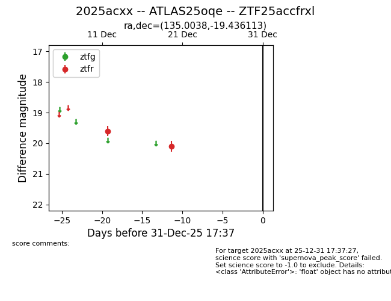
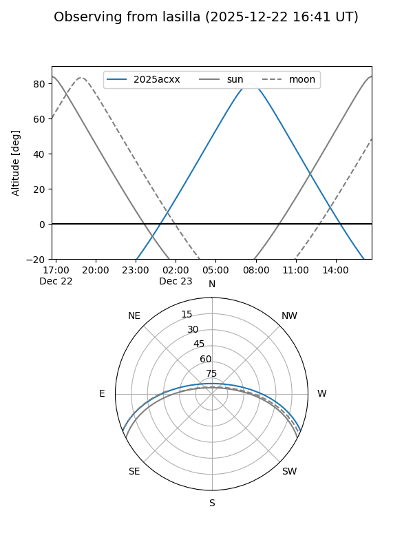
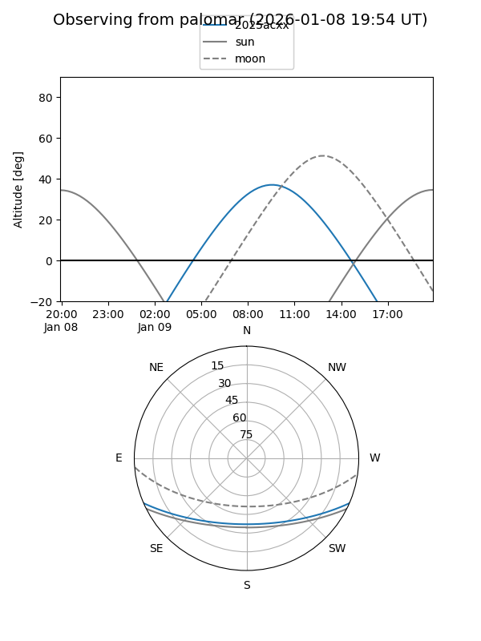

2025acxx
Target 2025acxx at 2025-12-18 11:18
Aliases and brokers:
FINK: fink-portal.org/ZTF25accfrxl
Lasair: lasair-ztf.lsst.ac.uk/objects/ZTF25accfrxl
ALeRCE: alerce.online/object/ZTF25accfrxl
TNS: wis-tns.org/object/2025acxx
YSE: ziggy.ucolick.org/yse/transient_detail/2025acxx
alt names
ZTF25accfrxl (ztf,fink_ztf)
2025acxx (tns,yse)
ATLAS25oqe (atlas)
Coordinates:
equatorial (ra, dec) = 135.0038,-19.43611
equatorial (HMS+DMS) = 09:00:00.91,-19:26:10.01
galactic (l, b) = (246.2540,+17.14589)
Photometry
last ztfr=19.60
1 ztfr detections
Lightcurve

Visibility


Additional plots